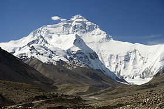
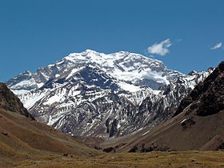
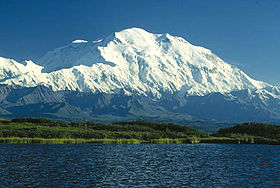
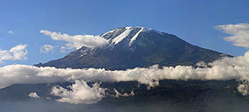
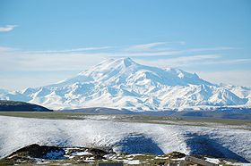
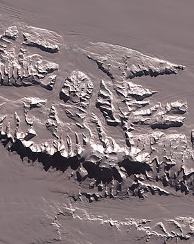
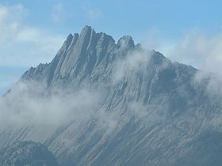
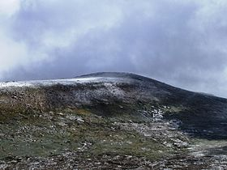

Les sept sommets (Seven Summits en anglais) sont les montagnes les plus élevées de chacun des sept continents.
En atteindre le sommet est considéré comme un défi de l'alpinisme.
| Sommet | Elevation(m) | Continent | Massif | Pays | photo |
|---|---|---|---|---|---|
| Everest | 8848 | Asie | Himalaya | Népal, chine |  |
| Aconcagua | 6962 | Amerique du sud | Cordillière des Andes | Argentine |  |
| Denali (mont Mckinley) | 6190 | Amerique du nord | Chaine d'Alaska | Etats-unis |  |
| Kilmandjaro | 5892 | Afrique | Vallée du grand rift | Tanzanie |  |
| Elbrouz | 5642 | Europe | Caucasse | Russie |  |
| Massif Vinson | 4892 | Antartique | Monts Elsworth | revendiqué par la Chili |  |
| Puncak Java(Pyramide carstensz) | 4884 | Océanie | Monts Maoke | Indonésie |  |
| Mont kosciuszko | 2228 | Sous Continent australien | Cordillière australien | Australie |  |
Source : wikipedia.org
Remonter en début de page